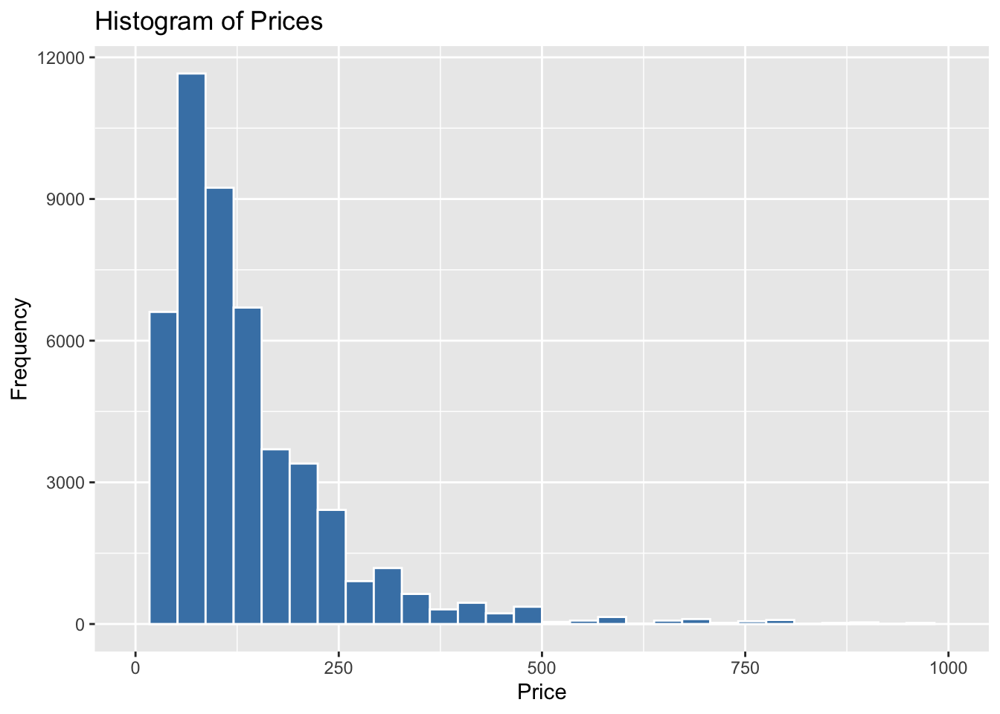
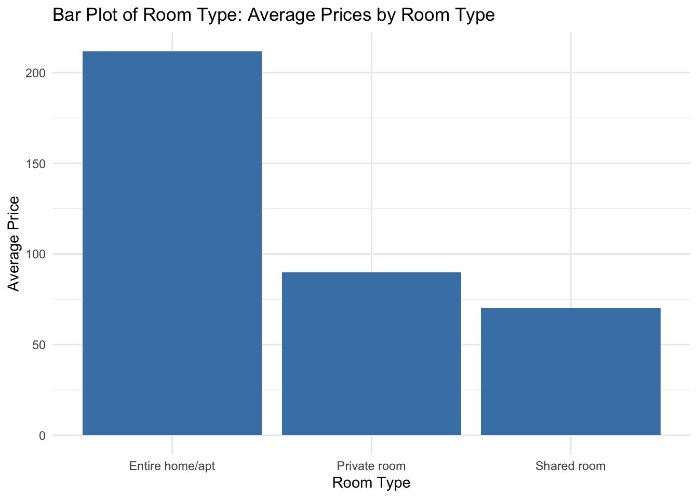
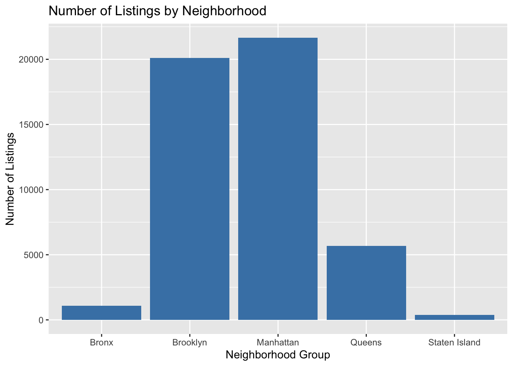
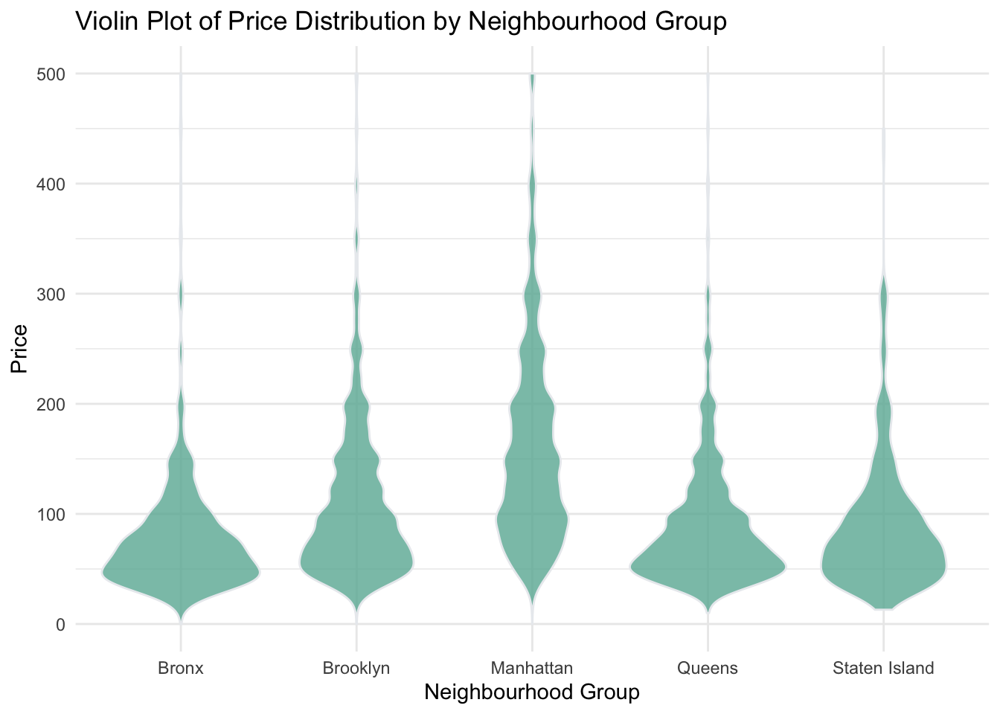
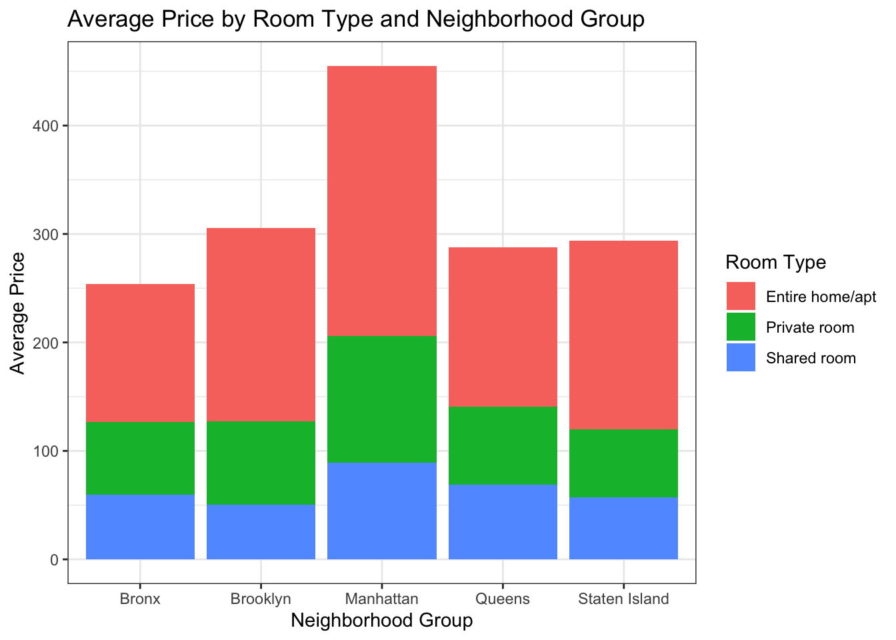

library(tidyverse)
library(ggplot2)
library(summarytools)
knitr::opts_chunk$set(echo = TRUE, warning=FALSE, message=FALSE)Challenge 5: AirBnB Visualization
challenge_5
Dirichi Umunna
air_bnb
AirBnB Visualization
Read in Data
#read in data set
newnyc <- read_csv("_data/AB_NYC_2019.csv")
head(newnyc)# A tibble: 6 × 16
id name host_id host_…¹ neigh…² neigh…³ latit…⁴ longi…⁵ room_…⁶ price
<dbl> <chr> <dbl> <chr> <chr> <chr> <dbl> <dbl> <chr> <dbl>
1 2539 Clean & q… 2787 John Brookl… Kensin… 40.6 -74.0 Privat… 149
2 2595 Skylit Mi… 2845 Jennif… Manhat… Midtown 40.8 -74.0 Entire… 225
3 3647 THE VILLA… 4632 Elisab… Manhat… Harlem 40.8 -73.9 Privat… 150
4 3831 Cozy Enti… 4869 LisaRo… Brookl… Clinto… 40.7 -74.0 Entire… 89
5 5022 Entire Ap… 7192 Laura Manhat… East H… 40.8 -73.9 Entire… 80
6 5099 Large Coz… 7322 Chris Manhat… Murray… 40.7 -74.0 Entire… 200
# … with 6 more variables: minimum_nights <dbl>, number_of_reviews <dbl>,
# last_review <date>, reviews_per_month <dbl>,
# calculated_host_listings_count <dbl>, availability_365 <dbl>, and
# abbreviated variable names ¹host_name, ²neighbourhood_group,
# ³neighbourhood, ⁴latitude, ⁵longitude, ⁶room_typecolnames(newnyc) [1] "id" "name"
[3] "host_id" "host_name"
[5] "neighbourhood_group" "neighbourhood"
[7] "latitude" "longitude"
[9] "room_type" "price"
[11] "minimum_nights" "number_of_reviews"
[13] "last_review" "reviews_per_month"
[15] "calculated_host_listings_count" "availability_365" Data Set Overview
This dataset provides insights into the listing activities of Airbnb properties in the five boroughs of New York City, New York during the year 2019. It encompasses various essential details about each property, including geographical coordinates, rental types, price breakdowns, review information and the availability of each property throughout the year. We are going to perform our visualization using the price variable. We will begin by ensuring the price variable is complete and clean
# Check for missing data in the "price" column
missing_count <- sum(is.na(newnyc$price))
# Print the result
if (missing_count > 0) {
cat("The 'price' column has", missing_count, "missing value(s).")
} else {
cat("The 'price' column does not have any missing values.")
}The 'price' column does not have any missing values.#mean
mean(newnyc$price)[1] 152.7207##perform price histogram
ggplot(newnyc, aes(x = price)) +
geom_histogram(fill = "steelblue", color = "white") +
labs(title = "Histogram of Prices", x = "Price", y = "Frequency") +
xlim(0, 1000)
Price Overview
To begin our analysis, we calculated the mean price point, which was found to be 152. This gives us a sense of the average price range for the Airbnb listings in our dataset. Next, we created a histogram to visualize the distribution of price points. To focus on the majority of prices and exclude any potential outliers, we limited the price variable to 1000. This allowed us to examine the distribution within a more relevant range. Upon plotting the histogram, we observed that all the price points fell within this limit of $1000, indicating that there were no outliers exceeding this threshold. This ensures that our analysis is focused on the typical price range and provides a clearer understanding of the distribution of prices in our dataset.
##lets check price by room types
ggplot(newnyc, aes(x = room_type, y = price)) +
geom_bar(stat = "summary", fun = "mean", fill = "steelblue") +
labs(x = "Room Type", y = "Average Price") +
ggtitle("Bar Plot of Room Type: Average Prices by Room Type") +
theme_minimal()
##lets see what neighborhood groups have the highest listing
ggplot(data = newnyc, aes(x = neighbourhood_group)) +
geom_bar(fill = "steelblue") +
labs(x = "Neighborhood Group", y = "Number of Listings") +
ggtitle("Number of Listings by Neighborhood")
# Create the histogram
ggplot(newnyc, aes(x = neighbourhood_group, y = price)) +
geom_violin(fill = "#69b3a2", color = "#e9ecef", alpha = 0.8) +
ylim(0, 500) +
labs(x = "Neighbourhood Group", y = "Price") +
ggtitle("Violin Plot of Price Distribution by Neighbourhood Group") +
theme_minimal()
Bivariate Findings
Based on the analysis of the dataset, it is evident that the room type with the highest-priced listings is “Entire home/apt”. Additionally, the neighborhood group with the highest number of listings is Manhattan, which coincides with the observation that the highest prices also originate from this neighborhood. This suggests that Manhattan offers a premium market for entire homes and apartments on Airbnb. Let us see if we can make multivariate sense of this analysis.
# Create a subset of the data with relevant variables
subset_newnyc <- newnyc %>%
select(room_type, neighbourhood_group, price)
# Calculate the average price by room type and neighborhood group
average_prices <- subset_newnyc %>%
group_by(room_type, neighbourhood_group) %>%
summarize(avg_price = mean(price))
# Create the stacked bar plot
ggplot(average_prices, aes(x = neighbourhood_group, y = avg_price, fill = room_type)) +
geom_bar(stat = "identity") +
labs(x = "Neighborhood Group", y = "Average Price", fill = "Room Type") +
ggtitle("Average Price by Room Type and Neighborhood Group") +
theme_bw()
Multivariate Findings
By utilizing a stacked barplot, we can easily discern the insightful patterns within the data. The visualization reinforces our understanding that entire homes/apartments command the highest prices, while simultaneously highlighting Manhattan as the neighborhood group with the most bookings in that price range. This single visualization serves as a powerful tool, encapsulating multiple layers of multivariate analysis within a single output.